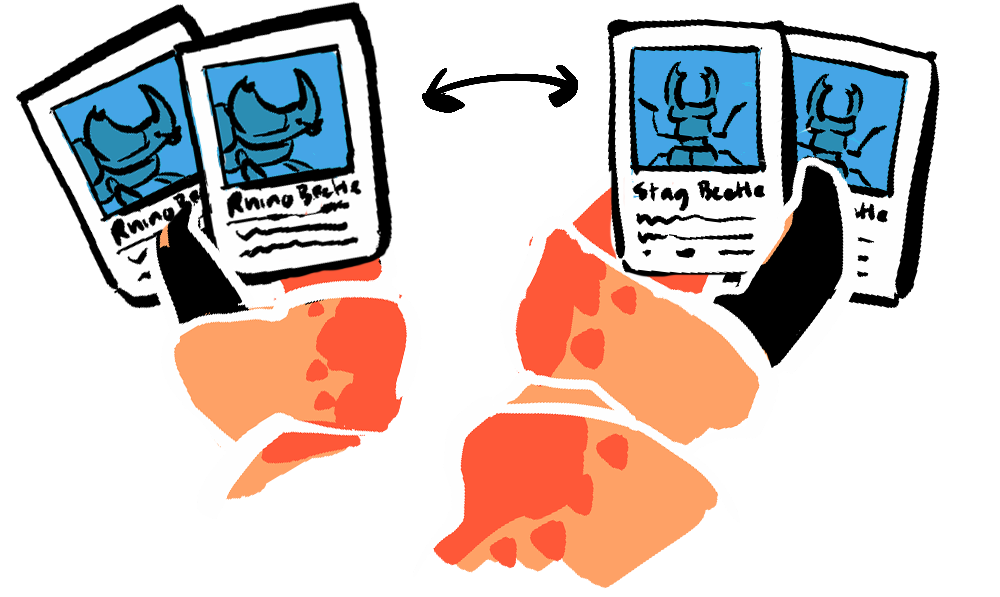

GAME THEORY
a science of strategic interactions
Non-Zero-Sum games are just one aspect of the wider field of Game Theory; a fascinating field of mathematics that deals with models of conflict and cooperation among rational decision-makers.
While humans have used game-theoretical ideas throughout history, Game Theory was formalised by John von Neumann and economist Oskar Morgenstern in their seminal work, "Theory of Games and Economic Behavior", in 1944.
KEY CONCEPTS IN GAME THEORY
Here are some pivotal ideas in the study of game theory:
BASIC CONCEPTS
Player: Anyone with skin in the game, like a team member in a football game, a CEO in corporate politics, or even countries in global diplomacy. In Game Theory, players are expected to act rationally, strictly within the parameters of the game, this can lead to behaviours that don't reflect social norms.Agent: Can be used interchangeably with player, but often refers to a non-human player in a multi-agent simulation. Agents are often used to trial a given behaviour, and so are not necessarily rational, rather they used to find the most effective response to a complex situation.Strategy: Your plan of action, whether you're lining up behind a spawn point or planning a long-term business model.Payoff: What you get out of it, from winning a bet to securing a long-term business contract. This is defined in a...Payoff Matrix: A table that shows the payoffs for each player for each possible combination of strategies, like the one below:
TYPES OF GAMES
Zero-Sum Game :constant sum is technically $5, but there is no outcome where completing the game leads to the share of winnings being lesser or greater than $5.Non-Zero-Sum Game :Simultaneous Game: Players act at the same time, from Rock-Paper-Scissors to blind auctions.Sequential Game: Where Players take turns, like chess.Combinatorial Games :Square Bears
CLASSIC GAMES
Prisoner's Dilemma :Stag Hunt :Ultimatum Game :Battle of The Sexes :Hawk and Dove: Players choose between aggressive and passive strategies, like elk stags fighting for dominance and clashing when they're evenly matched, or street vendors competing for optimal position.Public Goods Game :Coordination Game: Where players maximize benefits by choosing the same action, like driving on the same side of the road.Chicken :Centipede Game: Players can choose to cooperate or defect at each step, with the reward increasing each step.
STRATEGIES AND EQUILIBRIA
Nash Equilibrium :Dominant Strategy: A strategy that guarantees a win or draw: Like defecting in the a single round of the Prisoner's Dilemma . A rare example of tic-tac-toe has a dominant strategy right from the start for both players that always leads to a draw - making it a very limited game. Often dominant strategies will become available at a point of leverage in a game, like two rooks against a king reveals the strategy of driving the king to the end of the board.Dominated Strategy: The always worse option, like folding in poker no matter your hand, always choosing the defensive play in football or camping in a deathmatch.Mixed Strategy: Introducing randomness, from mixing up your serves in tennis to changing up your pricing strategy in a bidding war.
ADVANCED CONCEPTS
Subgame-Perfect Nash Equilibrium :Iterated or Repeated Games :Discount Factor :Costly Signalling :Pareto Efficiency : 
Mechanism Design: Creating game rules to get desired outcomes, from designing balanced gameplay in a video game to optimizing voting systems.Common Knowledge: Information that everyone knows and understands, like the basic rules of chess or commonly accepted business practices.Shapley Value :Extensive Form: Using tree-like diagrams to map sequential moves, useful in chess and corporate decision-making.Normal Form: Using a matrix for simultaneous moves, handy in figuring out everything from the prisoner's dilemma to market competitions.
Each of these concepts provides a unique lens through which you can understand the dynamics of various types of games—from simple games like tic-tac-toe to complex economic and social interactions. What concept fascinates you the most? What would you like to explore further?
Leave us your thoughts below.